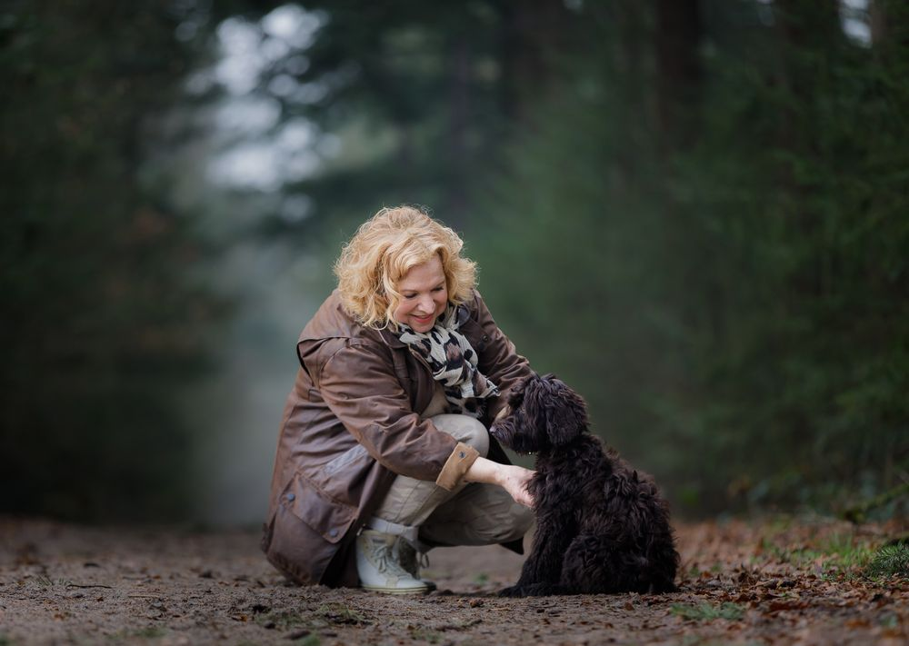
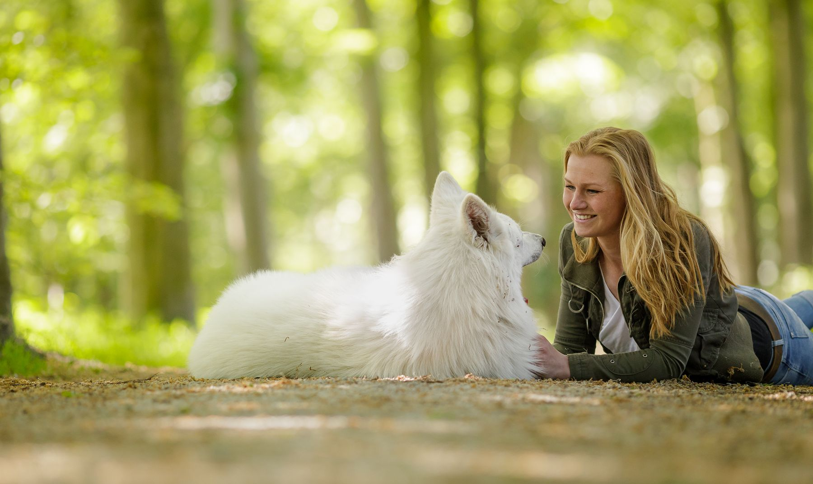
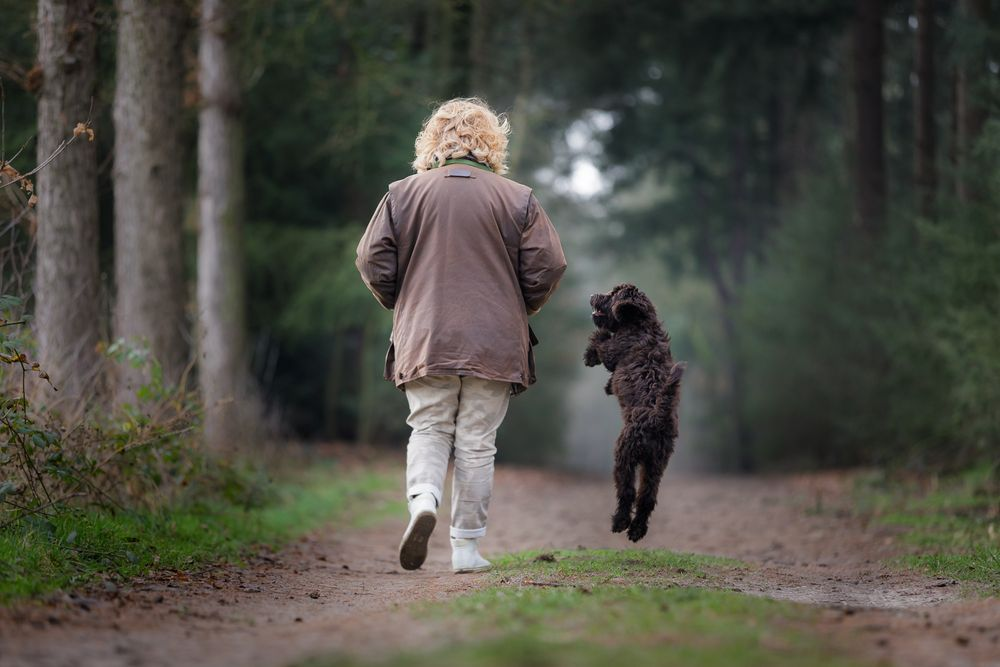
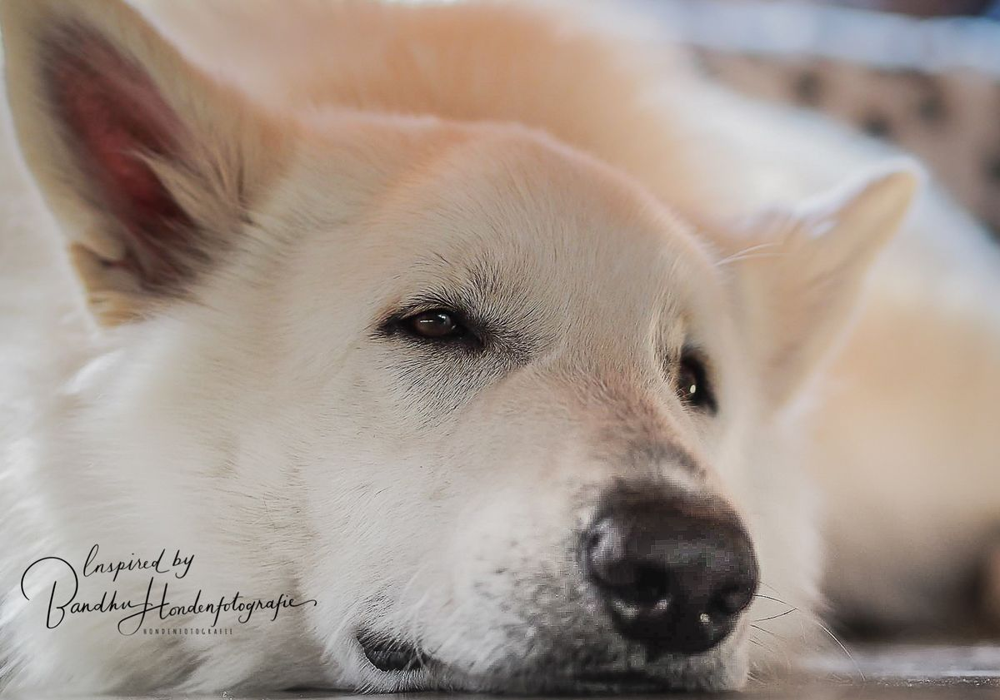
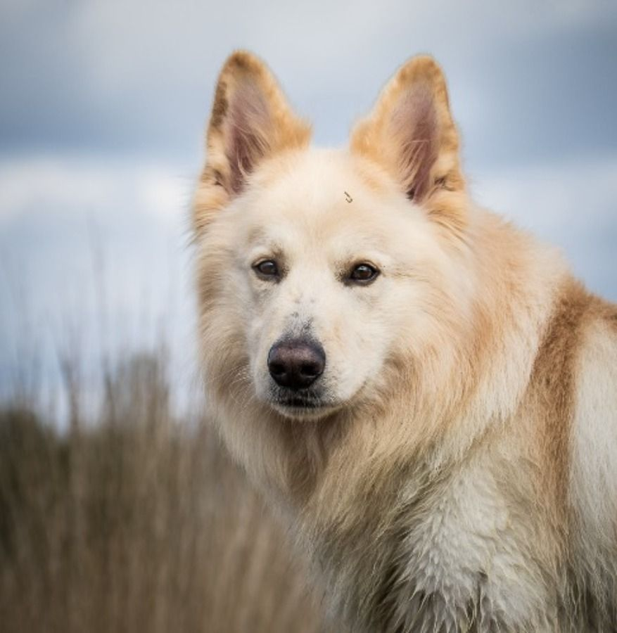
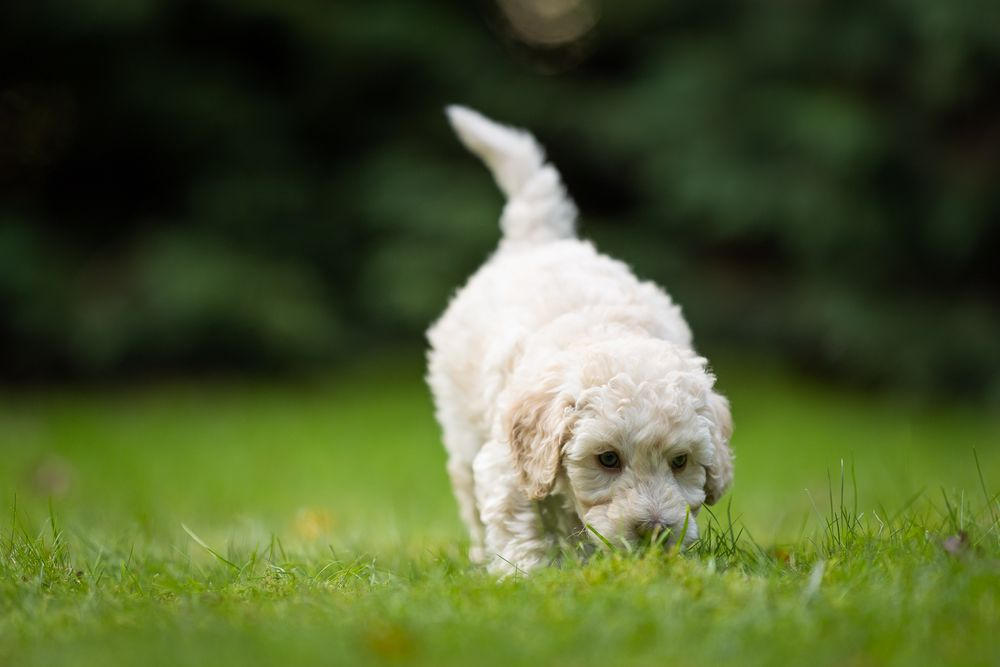
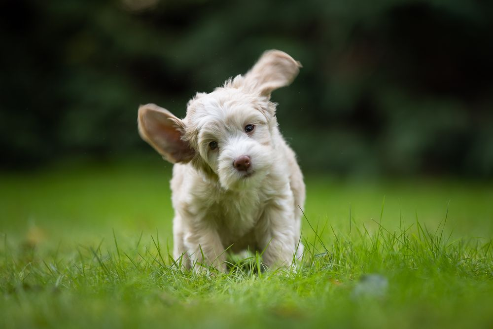
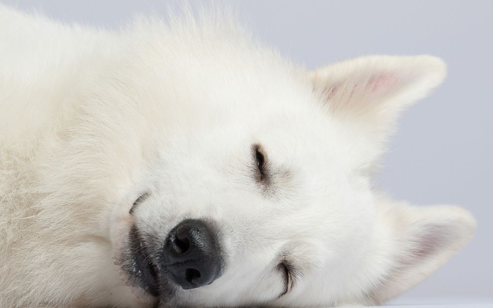
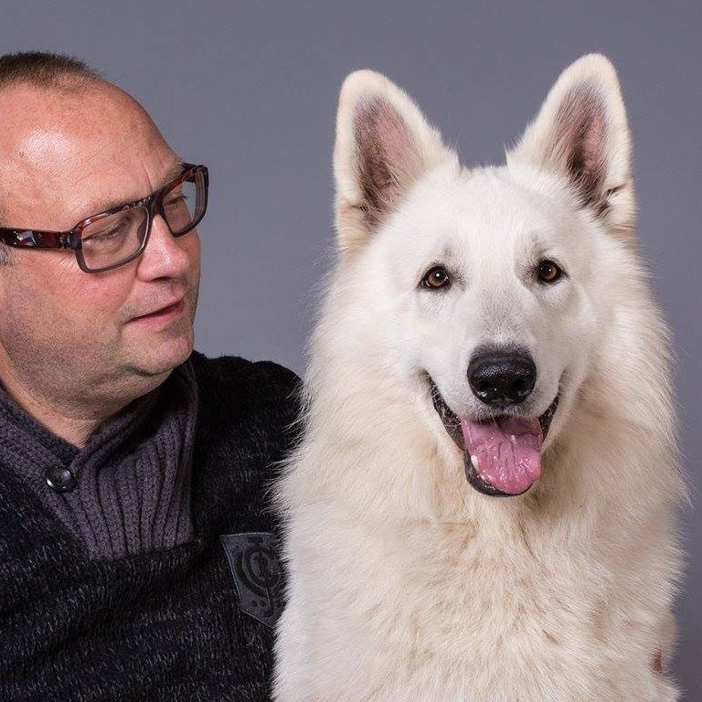

Gedragsconsult aan huis
We observeren je hond in zijn eigen omgeving, zoeken de oorzaak en geven je oefeningen mee.
Gem. 2 à 3 uur · € 275Meer info ›

Erkend hondengedragstherapeut in Roosendaal. We komen bij je thuis en kijken samen wat jouw hond echt nodig heeft. Van pup tot senior.
Uitvallen naar andere honden, paniek bij knallen, niet alleen kunnen zijn of gewoon een pup die goed van start moet. Klik op een onderwerp voor alle info en prijzen.

We observeren je hond in zijn eigen omgeving, zoeken de oorzaak en geven je oefeningen mee.

Bij uitvallen, trekken aan de lijn, niet komen als je roept of een hond die snel overprikkeld is.

Een trainingsplan op maat, zodat je hond stap voor stap minder bang wordt voor knallen.

Je hond leert ontspannen alleen thuis te blijven. De begeleiding kan volledig online.

Privélessen op wisselende plekken in het echte leven, op het tempo van jouw pup.

Elke pup wordt op 7 weken los geobserveerd, voor de beste match met het nieuwe baasje.
Heeft jouw hond een ander probleem? Neem gerust contact op ›
Geen groepsles op een afgelegen hondenveld. Honden leren plaatsgebonden, dus oefenen we daar waar jullie elke dag komen. Met rust en aandacht voor jouw hond.

Ongeveer de helft van de honden is bang voor harde geluiden zoals vuurwerk. Veel honden wennen er nooit aan en reageren juist steeds heftiger. De angst kan zich ook uitbreiden naar onweer of dichtslaande deuren.
Elk pakket begint met een huisbezoek. Daarna maken we een plan met korte- en langetermijnstappen: je hond voelt zich eerst veiliger en wordt daarna echt minder bang voor knallen.
Hoe eerder je begint, hoe rustiger de jaarwisseling. Online begeleiding is ook mogelijk.
“Ik heb voor het eerst sinds lange tijd een rustig oudejaarsavond gehad dankzij de Earpro gehoorbescherming. Met een paar weken training en veel aaien op de dag zelf is Vladimir, mijn hond die normaal in paniek slaat bij de minste knal, redelijk rustig blijven liggen op mijn schoot. Heerlijk zo’n oudejaarsavond! Dank aan Kees voor al zijn goede tips en de bloesems als ondersteuning!”
“Op advies van Kees zijn wij bij onze hond gebruik gaan maken van bloesem remedies. Dit nadat de andere hond met wie is ze opgegroeid plotseling is overleden, en ze heeft geen afscheid kunnen nemen. Nu na 2 weken zien we dat ze weer opbloeit, weer vrolijk is en gelukkig weer eet en ook weer wil spelen.”
“Leuke hondenfotoshoot gehad in de natuur. Kees is heel vriendelijk, rustig en meedenkend. Foto’s zijn snel klaar, mooie kwaliteit, top resultaat.”

Van jongs af aan ben ik bezig met honden en fotografie. Na een erkende opleiding tot hondengedragstherapeut heb ik inmiddels vele honderden honden en hun baasjes geholpen. Iedere hond vind ik uniek en alle rassen zijn welkom.
Mensen zullen vergeten wat je hebt gezegd, maar mensen zullen nooit vergeten wat je voor hun hond hebt gedaan.Wat een dierbare vriendin ooit tegen me zei
Ik blijf me bijscholen, onder meer in agressie, stress en vuurwerkangst. Omdat ik maar een beperkt aantal gedragssessies per maand aanneem, heb ik alle tijd en aandacht voor jou en je hond.
Een fotoshoot van je pup of hond op een mooie locatie, of een workshop en privéles hondenfotografie. Bekijk het werk op Jouw hond op de foto.
Wil je een vrijblijvend kennismakingsgesprek of meteen een afspraak? Bel, app of mail, dan horen we graag hoe we jou en je hond kunnen helpen.
Vertel kort wat er speelt met je hond. Je eerste vraag via WhatsApp of e-mail is gratis.
Er is een beperkt aantal gedragssessies per maand, meestal doordeweeks en soms in het weekend.
Dogcases
Zundertseweg 13
4707 XD Roosendaal
06 24 78 92 20
info@dogcases.nl
Op afspraak, bij jou thuis of op locatie, door heel Nederland en België. Reiskosten € 0,50 per km vanaf 5 km. Woon je verder weg? Telefonische of video-begeleiding kan ook.
In de eigen vertrouwde omgeving laat je hond zijn normale gedrag het beste zien. Zo krijgen we een eerlijk beeld en kunnen we je zo goed mogelijk helpen.
We vertellen je hoe het probleem in elkaar zit en wat de onderliggende oorzaak is. Oefeningen worden uitgelegd, voorgedaan en samen geoefend. Daarna ga je zelf aan de slag of werk je verder onder begeleiding.
Reiskosten € 0,50 per km als de locatie 5 km of verder is.
Je hond blaft steeds meer, reageert opeens heftig op andere honden, trekt aan de lijn of luistert niet meer als je roept. Het komt meestal niet vanzelf goed. We geven je training en oefeningen die passen bij jouw hond, met de focus op rust, aandacht en nieuw gedrag.
Ook voor volwassen honden is training nog heel zinvol. Lesduur 45 tot 60 minuten.
Begeleide wandelingen met oefeningen voor honden die uitvallen, onzeker of te opgewonden zijn.
Honden die eerder schade hebben gemaakt mogen mee met muilkorf. Vaak is eerst een consult of privéles aan te raden.
Verlatingsangst is pittig voor hond en baasje: je bent je vrijheid kwijt en je leven staat in het teken van je hond. Het is een complex probleem, maar zeker te verhelpen.
Kees volgde hiervoor de opleiding tot SA Pro expert (Separation Anxiety Professional) bij Julie Naismith. Het programma gaat heel goed via computer, tablet of telefoon, dus het maakt niet uit waar je woont.
Informeer naar de kosten en mogelijkheden.
Bij Dogcases alleen individuele lessen, of in overleg met z'n tweeën. Geen drukke groepsles waar je pup overprikkeld raakt, maar met rust en aandacht oefenen op wisselende plekken in het echte leven.
Je pup maakt kennis met andere honden, mensen, dieren, voorwerpen en geluiden. Daarnaast oefenen we de basis van de opvoeding.
Krijg je binnenkort een pup? De agenda loopt snel vol, dus neem op tijd contact op. Reiskosten buiten Roosendaal € 0,50 per km.
Op 7 weken wordt elke pup los geobserveerd op een plek waar hij nog nooit is geweest. Geen examen met een goede of foute uitslag, maar een gedragsobservatie per pup. Zo maak je de beste match tussen pup en baasje.
Reiskosten € 0,50 per km.